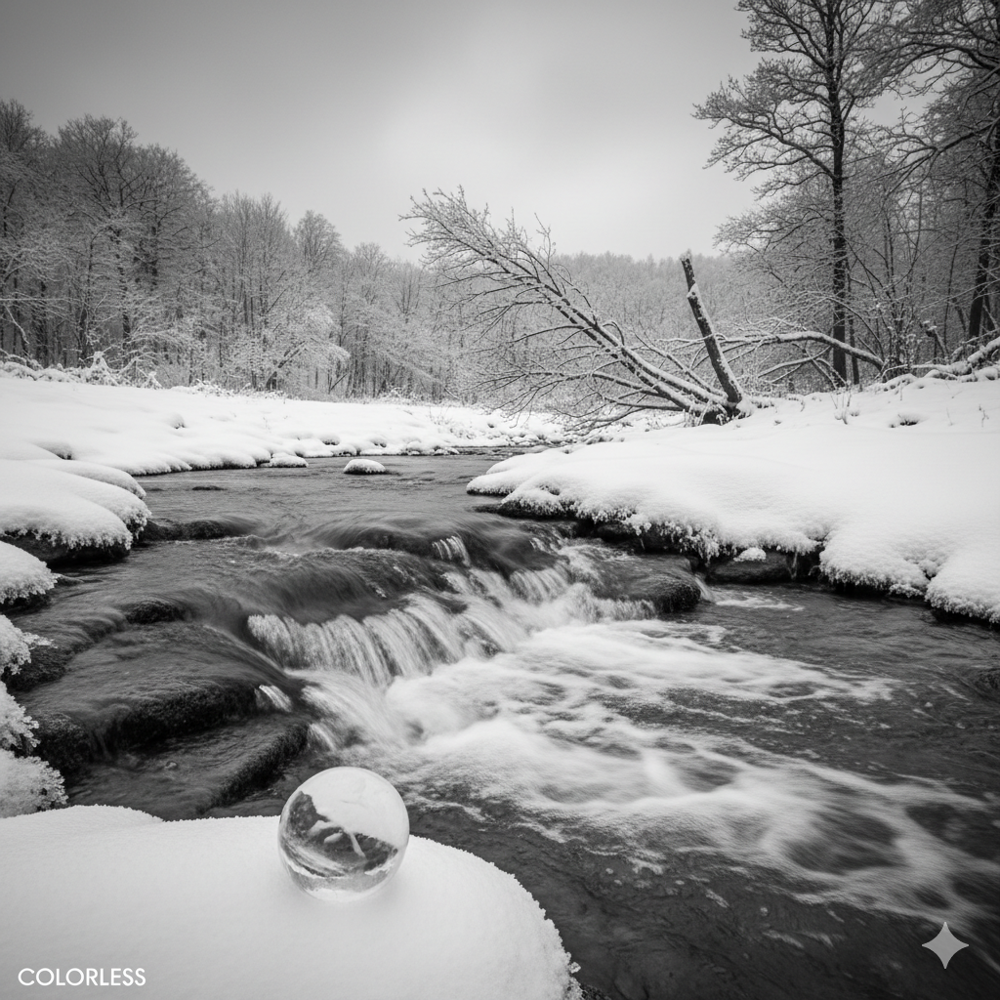

2025/09/15
Chatgpt tells me 不是冷漠，而是空白.
I think it’s just colorless. Which is good, right? We can still see the color.
And if it’s too colorful, we may live in some other dimensions.
所以我问nano banana画一个colorless

2025/09/17
Mio 从很多很多维度来看都是一条好狗 （至少是一条符合我的狗）
比如说 她被印度女医生嘎掉腰子后 只休息了 半个礼拜就好了 医生说要两个礼拜
但是从此她讨厌硬度女人
再比如 再贵treat 狗粮她都没啥兴趣 她只喜欢火腿肠 或者垃圾桶里排骨 （好吧 有个磨牙的 30块钱一根的挺贵的她也很喜欢
当然我不喜欢她咬我鞋子 因为她 我得把我的贵的鞋子藏起来
现在她是多伦多最吵的狗 还好在家里不吵
最开始的时候 问我说你觉得你的狗怎么样 我说 我也不期望她很聪明 （虽然她蛮聪明的 但是聪明不在狗改在的地方） 我只希望她活泼点 因为她那个时候太安静了
然后 现在 她真的好吵 诶 不怪她 没边界感被别的狗咬 然后狂叫 而且我们也虽然报班了 但是从来没怎么去上课 lol
我感觉我应该是很烂的家长 就是那种平时没啥关注 突然会给小孩来个很高的要求 当我小孩应该蛮累的 尤其是我觉得家庭外还有很多重要的事情
anyways 我知道有了小孩就完全不一样了
2025/09/19
接近一个半礼拜没有运动了 感觉荷尔蒙有点低 但是好歹是喝上了咖啡原液 因为我听说咖啡因对脑子好
感觉自己脸很垮 每天还狂扣鼻子 扣鼻子太爽了
学习计划的话 嗯 还可以再试试吧🫠
最近也意识到很多事情其实是运气 我要做的是多enjoy 多努力 少期待
夏天的尾巴 天黑的也太早了吧
做了一些梦
2025/09/25
刚刚Mio在我边上做噩梦了 哈哈 笨狗
这两天还是发生了一些事情 虽然我没做啥 我感觉我还得沉淀沉淀 还不太成熟